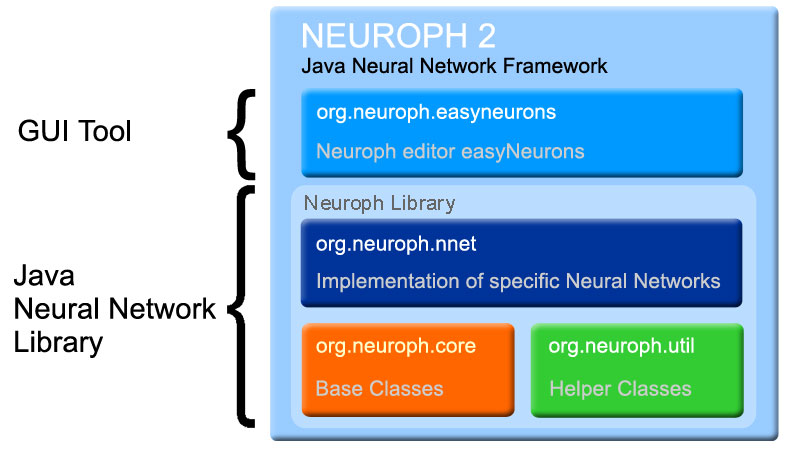

The Neuroph Framework consists of the Java neural network library and GUI application easyNeurons for creating neural networks which can be used in Java programs. Neuroph supports common neural network architectures, and also it is very flexible so you can easily extend it to suit your specific needs. The basic structure of the framework packages is shown on the picture below. This help contains basic info on how to create and use neural networks with Neuroph framework.
